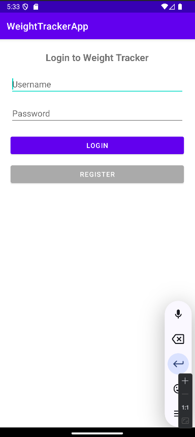
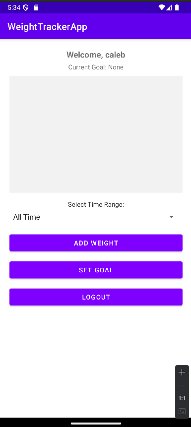
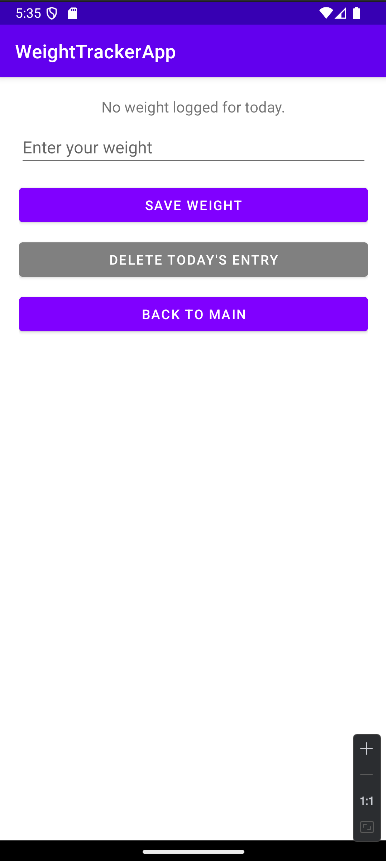
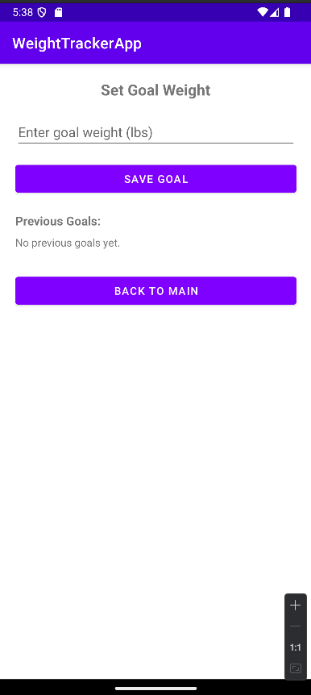
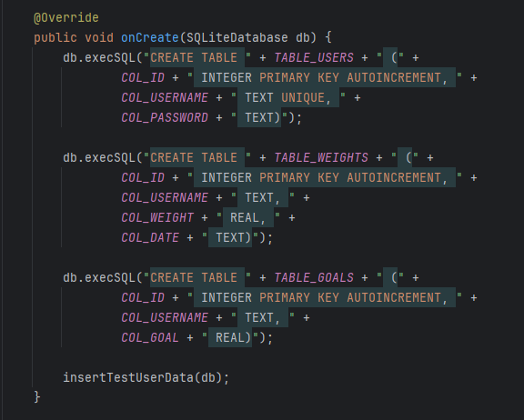

The artifact selected for this Capstone project was a Weight Tracker mobile application originally developed in CS360: Mobile Architecture and Programming. The application was designed to help users track their weight, manage weight-loss goals, and receive notifications related to their progress.
The original application provided a functional foundation that included user authentication, weight tracking, goal management, and SQLite database integration. While the application successfully met the requirements of the original course project, it also presented several opportunities for improvement in software design, data organization, database functionality, and overall user experience.
Rather than selecting multiple artifacts throughout the Capstone, I chose to focus on a single project and demonstrate how an application can evolve through incremental enhancements. This allowed each enhancement category to build upon previous work while maintaining the application's original purpose.
These features established a working application and provided a strong foundation for future development.
The screenshots below show the original CS360 version of the Weight Tracker application before any Capstone enhancements were implemented.
Original Login Screen

Original Dashboard

Original Weight Entry Screen

Original Set Goal Screen

Original Database Structure

Before beginning the enhancement process, a formal code review was conducted to evaluate the existing application and identify opportunities for improvement. The purpose of the review was to analyze the original design, assess strengths and weaknesses, and develop an enhancement plan that aligned with the three Capstone categories.
The code review provided a roadmap for the project and helped determine which improvements would provide the greatest impact while maintaining the application's original functionality.
The following video documents the review of the original application, discusses the existing implementation, and outlines the enhancement strategy used throughout the Capstone project.
The code review identified several areas where the application could be strengthened through software engineering, algorithms and data structures, and database enhancements.
One of the primary goals of this project was to improve the application without completely rebuilding it. Instead of replacing existing functionality, each enhancement category focused on expanding and improving the original system through incremental changes.
Category One focused on software design and engineering improvements, including authentication redesign, dashboard modernization, settings functionality, and architectural refactoring.
Category Two focused on algorithms and data structures through the development of a historical tracking system featuring calendar generation, record retrieval, and analytics calculations.
Category Three focused on database design and integration by expanding the SQLite database, introducing a motivational message system, and implementing randomized query retrieval.
Together, these enhancements transformed the original CS360 project into a more complete, scalable, and professionally organized mobile application.